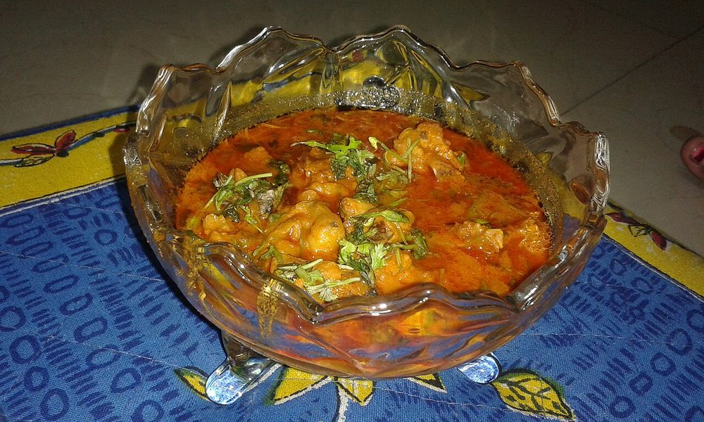

Mutton Kola Urundai
deep-fried mince and lentil balls, dense and heavy with pepper and fennel

Allergens: none of the ten listed below
Checked against the ingredient list for ten allergens: milk, egg, fish, crustaceans, tree nuts, peanuts, sesame, mustard, soy and gluten. Brands vary, so read the label on anything new to you.
Ingredients
Quantities for 4.
- 400g, minced Muttonlean; too much fat and the balls fall apart
- 75g, soaked 1 hour Chana Dalthe binder and the texture
- 12 small, chopped Shallot
- 8 cloves Garlic
- 1 inch Ginger
- 3 sprigs, chopped Curry Leaves
- 2 tsp Black Pepper
- 2 tsp Fennel Seedsthe signature note of kola urundai
- 1 tsp Cumin Seeds
- 5 Dried Red Chilli
- 3 Cloves
- 1 inch Cinnamon
- 1 small Star Aniseoptional
- 1/2 tsp Stone Flowerkalpasioptional
- 1/2 tsp Turmeric
- 3 tbsp, grated Coconutoptional
- 3 tbsp, chopped Coriander Leavesoptional
- 2 tbsp Rice Flourinsurance if the mix is looseoptional
- 500ml, for deep frying Neutral Oil
- to taste Salt
Cookware
stovetop, kadhai, blender
Before you start
- Soak the chana dal 1 hour, then drain it thoroughly. Wet dal makes a mix that will not hold its shape.
- Boil the mince with turmeric and salt for 10 minutes and drain it well before grinding. Cooking first is what gives kola urundai its tight, dense bite.
- Chill the ground mixture 20 minutes before rolling. Cold mix rolls smooth and does not crack in the oil.
Method
- Boil the minced mutton with the turmeric, salt and 100ml water for 10 minutes, until it is cooked and dry. Drain and cool.
- Dry-roast the pepper, fennel, cumin, chillies, cloves, cinnamon, star anise and stone flower for 3 minutes over low heat, then cool.
- Grind the drained chana dal coarsely with the roasted spices. You want texture, not a paste.Grind dry. Adding water here is the single most common reason kola urundai disintegrate in the oil.
- Add the cooked mince, shallots, garlic, ginger, curry leaves, coconut and coriander leaves and pulse to a thick, sticky mass.
- Check the bind by rolling one ball. If it cracks or sags, work in the rice flour a spoon at a time. Chill 20 minutes.
- Roll into smooth balls the size of a small lime, about 18 of them, pressing firmly.
- Heat the oil to 170C. A pinch of the mix should rise in 3 seconds without browning instantly.Too hot and the outside blackens while the middle stays raw-tasting; too cool and they soak up oil and break.
- Fry in batches of 5-6 for 5-6 minutes, turning, until deep mahogany brown and firm.
- Drain on paper and rest 3 minutes before eating.
Storage
Keeps 3 days refrigerated. Reheat in a hot oven or dry pan for 5 minutes to crisp the shell; they can also be dropped into a kuzhambu and simmered 10 minutes.
Nutrition Low estimate
High protein: 27+ g a serving, 25% of the calories
| Per serving181 g | Per 100 g | |
|---|---|---|
| Calories | 434+ kcal | 240+ kcal |
| Protein | 26.9+ g | 15+ g |
| Carbohydrate | 26.2+ g | 14+ g |
| of which sugars | 2.9+ g | 2+ g |
| Fibre | 6.0+ g | 3+ g |
| Fat | 25.5+ g | 14+ g |
| of which saturated | 6.1+ g | 3+ g |
| of which unsaturated | 17.5+ g | 10+ g |
The + means ingredients given to taste rather than by weight are counted as zero, so the true figure is a little higher than shown. A rough guide only. A large part of this ingredient list is given to taste rather than by weight, or much of what is weighed is not eaten. Ingredients given to taste rather than by weight are counted as zero, so the real figure is a little higher than this. The + says so. Some ingredients have no exact match in the nutrient database and use the nearest equivalent: curry leaves, mutton, stone flower. Estimated from raw ingredients using USDA FoodData Central. Cooking changes are not modelled, and added salt is excluded, so sodium is not given.
Written and checked against sources, not cooked in a test kitchen. Times, yields, allergens and nutrition are worked out rather than measured, so use your own judgement on doneness and on storing. More in About.